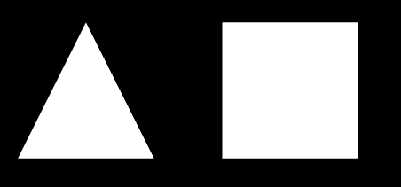

首先记得在自己的代码最顶部加上本章开头说的jQuery与gl-matrix的引入代码，后面我们的示例代码中不再说明。
本节我们的目标是在Canvas里画一个如图1的三角和方块。

图1
每节的内容都可以去本书简介中给的代码演示地址查看具体效果，可以从页面查看源码。附录1也给出了每节的WebGL代码。
首先把canvas放到网页上
<canvas id = "test01-canvas" width = "800" height = "600"></canvas>
canvas是画布的意思，它不止可以做WebGL，还可以做画图等其他事情。
画布的大小需要在这里设置或用JS修改，但如果用css文件去设置尺寸的话，会发现最后绘制出来的东西被扭曲了，因为css改变了控件的大小却没有改变画布大小。
id是控件的唯一标识，原则上你不能写两个canvas用同一个id。我们会在JS代码中通过这个id找到这个canvas。
接下来就开始我们的JS代码了。再提一次我们前面说过引入jQuery，下面的代码虽然用到jQuery地方很少，但是不引入jQuery的话代码是跑不动的。
<script type="text/javascript">
HTML文件中插入JS代码，需要先加入标签，JS代码写在标签下面。结束的时候当然对应也要加上：
</script>
好，JS代码开始。
$(document).ready(function ()
{
webGLStart();
});
function webGLStart()
{
var canvas = $("#test01-canvas")[0];
initGL(canvas);
initShaders();
initBuffers();
gl.clearColor(0.0, 0.0, 0.0, 1.0);
gl.enable(gl.DEPTH_TEST);
drawScene();
}
“$(document).ready(function (){});”是jQuery语法中，表示函数内的内容在Web页面加载完成时运行。如果不这样，可能在Web尚未加载完的时候，JS就开始尝试找某个控件，结果扑个空，代码逻辑就不能正常执行了。
webGLStart函数是一切的开始，首先我们用canvas的id“test01-canvas”找到它，$("#xxx")是jQuery用id找控件的方法，用class找的话就是$(".xxx")。找到之后得到的是jQuery对象，这里用一个数组下标[0]获取canvas的HTML对象，然后赋值给我们定义的canvas变量。
接下来三步是对不同部分的初始化，我们后面会说。
gl是我们自己定义的变量名，对应绘制的内容，后面会说它的初始化。
好比canvas是画布，gl是画笔，我们gl.clearColor四个参数，前三个RGB，第四个不透明度，这句就是让gl把整个canvas涂黑。gl.enable用来开启一些功能，这里DEPTH_TEST是深度测试，现在我们先不管它有什么用，写到这就是。
drawScene()就是具体绘制操作的函数，也是我们自己定义的，后面会说。
一套代码流程的整体思路就是：
var gl;
function initGL(canvas)
{
try
{
gl = canvas.getContext("webgl") ||
canvas.getContext("experimental-webgl");
gl.viewportWidth = canvas.width;
gl.viewportHeight = canvas.height;
}catch(e){}
if(!gl)
{
alert("无法初始化“WebGL”。");
}
}
这里我们定义了全局变量 gl，一般全局变量是不提倡的，第一节我们尽量少关注其他问题，先这样做，解释起来方便一些。
canvas在入口里已经获取到了，canvas.getContext来拿到它的“内容”给gl画，之后gl无论画什么，都是在这个canvas的画布上。参数用了“experimental-webgl”和“webgl”并通过或运算连起来，因为webgl标准存在一个“实验阶段”，要通过“experimental-webgl”来获取内容，我现在直接只用“webgl”就可以，不过为了兼容性和其他不确定问题，两个都写上总保险些。
获取canvas的宽高，让gl“随身携带”，后面会用到这两个数据来设置视口。
如果一个点一个点告诉显卡的话，累死我们，急死显卡。 把要画的内容所有的点存到一个缓冲区，对应显卡内存一块区域，让显卡一起处理，对数据规模较大又要即时演算做动画的情况，提高效率。
var triangleVertexPositionBuffer;
var squareVertexPositionBuffer;
分别定义三角的buffer和矩形的buffer，刚定义的时候它们当然只是个什么都没有的变量。
function initBuffers()
{
triangleVertexPositionBuffer = gl.createBuffer
用gl给他们申请buffer。
gl.bindBuffer(gl.ARRAY_BUFFER, triangleVertexPositionBuffer);
告诉WebGL，下面的代码在有新的变化之前，对gl.ARRAY_BUFFER操作就是对绑定的缓冲区（triangleVertexPositionBuffer）操作。
var vertices = [
0.0, 1.0, 0.0,
-1.0, -1.0, 0.0,
1.0, -1.0, 0.0
];
定义三角形的三个顶点，我们现在画平面的形状，z坐标就设为0。
gl.bufferData(gl.ARRAY_BUFFER,
new Float32Array(vertices), gl.STATIC_DRAW);
前面已经绑定了buffer，这里把定义的三角形顶点坐标数组告诉gl.ARRAY_BUFFER，也就是告诉了triangleVertexPositionBuffer。第三个参数STATIC_DRAW理解为“这数据的用途”，Float32Array和STATIC_DRAW这里先直接用，以后再解释。
triangleVertexPositionBuffer.itemSize = 3;
triangleVertexPositionBuffer.numItems = 3;
itemSize和numItems并不是WebGL的内置变量，不过JavaScript这方面比较自由，变量不用定义就能用，让相关对象自己携带相关信息方便许多。这里增加的信息就是明确“buffer里由vertices给出的九个数，表达的是三个顶点”。
squareVertexPositionBuffer = gl.createBuffer();
gl.bindBuffer(gl.ARRAY_BUFFER, squareVertexPositionBuffer);
vertices = [
1.0, 1.0, 0.0,
-1.0, 1.0, 0.0,
1.0, -1.0, 0.0,
-1.0, -1.0, 0.0
];
gl.bufferData(gl.ARRAY_BUFFER,
new Float32Array(vertices), gl.STATIC_DRAW);
squareVertexPositionBuffer.itemSize = 3;
squareVertexPositionBuffer.numItems = 4;
}
同理我们设置了矩形的数据。
看《OpenGL编程指南》的时候，到这个地方就蒙了。主要还是以前不知道显卡的工作流程。
我们先搞懂三个名词：渲染、管线、着色器。定义在网上都找得到，我说说我的理解，虽然可能比较狭义（甚至可能有一些误解），但能帮助我们理解程序。
是一个或一组动作。
一般我们看电影动画片，都是一帧一帧的“图片”，是二维数据，把他们适当换算后打到屏幕的每个像素上。
而图形，要把表述三维形状的数据，转化成可以在二维屏幕上显示的画面，多了一个维度就多了非常多的运算量。
我们在现实世界从某个角度看一些物体，其实也是经过“计算”的——引用知乎一个有趣的民间提法：上帝算法——就是物理规律决定哪个物体遮挡了哪个物体，哪个物体是什么颜色，然后进入到我们的眼睛里，映射到视网膜这个“屏幕”上。在计算机中，这些三维数据表示的虚拟物体和我们设定的、虚拟的、看这些物体的“眼睛”或者说“相机”，对应的这个“看”的“物理过程”则是需要GPU来算的。
GPU把三维数据按照我们需要的观察角度、光照环境、物体颜色等属性算出映射到“眼睛”里的平面图像，这个过程理解为渲染。
渲染一般对应英文中“render”这个词。
一般连起来称为渲染管线。渲染不是一下子完成的，根据任务目标（坐标变换，光照计算什么的）和硬件执行特点，标准制定者制定了渲染过程的多个步骤，它们就像制造工厂的流水线一样，一个步骤对数据处理后的结果，交给下一个步骤处理，多个步骤连起来，就成了一个流水线，这个流水线就是渲染管线。
过去渲染管线是固定的，我们把准备好的特定格式的数据送给GPU，在渲染管线里走一趟，得到二维图像显示在屏幕上。
现在允许对渲染管线的某些步骤进行个性化修改，灵活自由些总是更好的，至少我们可以让有些GPU比CPU擅长的工作，从CPU上搬到GPU上来运行了。
管线的一些步骤可以修改了，按照面向对象的思想，一个特定的管线上的特定步骤的任务调整，就有一个特定的“小东西”去负责，这个“小东西”就是着色器。
调整一个步骤的具体任务，需要用GPU看得懂的方式来表达，这就是着色器语言（GLSL）。别害怕，这并不是说我们又要马上学一门陌生的语言。幸运的是GLSL长的跟C语言真像，写起来和C语言一个手感哦~~在学习的过程中我们会慢慢来了解它具体的特性
着色器一般对应英文中的“shader”这个词。
WebGL主要是片段着色器（fragment）和顶点着色器（vertex）这俩，用着用着，结合它们的名字我们就会熟悉它们分别做什么的了。
打个简单的比方：
三个点的坐标->全部沿x轴左平移5->全部涂成红色->输出
这就是一条渲染管线了，中间的两个操作对应两个不同功能的shader。
好，回到这一节的代码，我们现在要告诉显卡怎么“画”。三步走：写自己的shader，把写好的shader按流水线连起来，告诉显卡。
<script id = "shader-fs" type = "x-shader/x-fragment">
precision mediump float;
void main(void)
{
gl_FragColor = vec4(1.0, 1.0, 1.0, 1.0);
}
</script>
<script id = "shader-vs" type = "x-shader/x-vertex">
attribute vec3 aVertexPosition;
uniform mat4 uMVMatrix;
uniform mat4 uPMatrix;
void main(void)
{
gl_Position = uPMatrix * uMVMatrix * vec4(aVertexPosition, 1.0);
}
</script>
为了方便，我们也把GLSL的代码写到页面里了，但是用<script>圈了起来，不然的话HTML会把这些代码直接显示到页面的。我们这一节的WebGL代码是写在类似的一个<script>里，这几行<script>包围的GLSL代码要和WebGL代码并列，即写在主体WebGL代码<script></script>的外面，具体参考本节末尾的完整代码。
上面就是基础功能的片段着色器（fragment shader）和顶点着色器（vertex shader）。shader不一定要以这种形式保存，其实我们的GLSL代码可以写在某个变量里，别的控件里，单独的文件里，甚至别人的网站里。。。只要WebGL在需要编译链接shader的时候，能用某种方法拿到整个GLSL代码的字符串就可以了。
我们这里把shader直接写在页面里，就要写一个对应的方法在WebGL运行时拿到这些代码的字符串。
function getShader(gl, id)
{
var shaderScript = $("#" + id);
if(!shaderScript.length)
{
return null;
}
var str = shaderScript.text();
var shader;
if(shaderScript[0].type == "x-shader/x-fragment")
{
shader = gl.createShader(gl.FRAGMENT_SHADER);
}
else if(shaderScript[0].type == "x-shader/x-vertex")
{
shader = gl.createShader(gl.VERTEX_SHADER);
}
else
{
return null;
}
gl.shaderSource(shader, str);
gl.compileShader(shader);
if(!gl.getShaderParameter(shader, gl.COMPILE_STATUS))
{
alert(gl.getShaderInfoLog(shader));
return null;
}
return shader;
}
两个参数，一个是我们之前说过的gl，另一个是页面里那两个保存着shader代码（GLSL）的控件的id，“shader-fs”或“shader-vs”。
var shaderProgram;
function initShaders()
{
var fragmentShader = getShader(gl, "shader-fs");
var vertexShader = getShader(gl, "shader-vs");
shaderProgram = gl.createProgram();
gl.attachShader(shaderProgram, vertexShader);
gl.attachShader(shaderProgram, fragmentShader);
gl.linkProgram(shaderProgram);
if(!gl.getProgramParameter(shaderProgram, gl.LINK_STATUS))
{
alert("无法初始化“Shader”。");
}
gl.useProgram(shaderProgram);
拿到编译好的shader，就该把shader告诉显卡了。我们得把两个独立的shader连城流水线。
用gl申请一个Program给shaderProgram，把两个shader交给shaderProgram，用shaderProgram链接它们，然后交给“画笔”gl.useProgram(shaderProgram)。
shaderProgram.vertexPositionAttribute =
gl.getAttribLocation(shaderProgram, "aVertexPosition");
gl.enableVertexAttribArray(shaderProgram.vertexPositionAttribute);
后面画的时候需要设置GLSL里面的某些变量与输入数据的关系，所以需要gl.getAttribLocation(shaderProgram, "aVertexPosition")得到GLSL中aVertexPosition这个变量的“位置”。 拿到这个位置，可以就让shaderProgram随身带着，shaderProgram.vertexPositionAttribute是我们自己加上去的（还是JS的特性，变量不用定义直接用）。
gl.enableVertexAttribArray告诉WebGL，这个属性（attribute）的值是用array给出的。
shaderProgram.pMatrixUniform =
gl.getUniformLocation(shaderProgram, "uPMatrix");
shaderProgram.mvMatrixUniform =
gl.getUniformLocation(shaderProgram, "uMVMatrix");
}
后面还会用到uniform变量，用getUniformLocation()来取得它的位置，也让shaderProgram随身带着，加上去。
var mvMatrix = mat4.create();
var pMatrix = mat4.create();
新建一个模型视图矩阵mvMatrix，模型矩阵用来控制物体平移旋转缩放，视图矩阵控制观察者位置的相应变化，前面提过仿射变换通过矩阵相乘实现，模型和视图矩阵通常一起用，所以这里定义为模型-视图矩阵。
pMatrix是投影矩阵，控制视野。视野有一定张角，并限定视野最远看到哪里，最近看到哪里，超出范围的数据不显示，只将张角、远近平面围起来的区域的数据进行计算映射。
function setMatrixUniforms()
{
gl.uniformMatrix4fv(shaderProgram.pMatrixUniform, false, pMatrix);
gl.uniformMatrix4fv(shaderProgram.mvMatrixUniform, false, mvMatrix);
}
前面让shaderProgram随身携带shader中uniform变量的位置，这里通过gl.uniformMatrix4fv把JS中我们定义的两个矩阵与GLSL中的对应变量绑定了，这样GPU就能得到我们在CPU中（执行JS代码）为两个矩阵准备的值。
function drawScene()
{
gl.viewport(0, 0, gl.viewportWidth, gl.viewportHeight);
gl.clear(gl.COLOR_BUFFER_BIT | gl.DEPTH_BUFFER_BIT);
mat4.perspective(pMatrix, 45, gl.viewportWidth / gl.viewportHeight, 0.1, 100.0);
万事俱备，可以“画”了。首先设置视口大小，我们就设置成画布大小。
清理buffer。
mat4是外部库gl-matrix提供的矩阵运算类，gl-matrix也在维护更新，写这篇的时候是2.x版本，与1.x版本不同的是把一些函数的输出矩阵传参的位置，从最后一个提到第一个了，所以可能会与LearningWebGL有所不同。
这里设置视场垂直张角45°，宽高比为画布的宽高比，视野最近限制距离和最远限制距离。把实现这套视野条件的矩阵存放到前面JS代码中定义的pMatrix里。
mat4.identity(mvMatrix);
mat4.translate(mvMatrix, mvMatrix, [-1.5, 0.0, -7.0]);
然后要把三角和矩形移动一下。我们前面两个数组设置每个点的坐标时候，是以原点为重心的，直接画就会让三角和矩形重叠在一起。
我们分别让它们一个左移一点，一个右移一点。
在计算机中坐标的平移、旋转、缩放是通过仿射变换实现的（可以上网查一下仿射变换）。把三维坐标放到一个4*4的矩阵里，当然会多一维出来，在计算中是有用的。根据坐标变换的需要，设计一个或一系列4*4的变换矩阵，然后把他们乘起来，就把坐标变换到了需要的位置，矩阵乘法是满足结合律的，所以一系列变换可以乘好为一个矩阵，再去乘原坐标的矩阵。至于为什么4*4，第四维填什么数字，为什么矩阵乘就能坐标变换，那都是数学上的事了。我们用gl-matrix这个优秀的库，就省去了考虑这些繁琐的东西。
学过线性代数知道，任何矩阵乘以单位矩阵结果还是它自己。我们先用mat4.identity()把mvMatrix初始化为单位矩阵，然后再去变换，才能得到预期的结果（如果第一步已经不是单位矩阵了，那么它相当于已经进行过若干变换）。
mat4.translate就完成了平移操作（当然这里只是生成了进行平移操作的矩阵）。
gl.bindBuffer(gl.ARRAY_BUFFER, triangleVertexPositionBuffer);
gl.vertexAttribPointer(shaderProgram.vertexPositionAttribute,
triangleVertexPositionBuffer.itemSize, gl.FLOAT, false, 0, 0);
又见bindBuffer，前面解释过，这时又进入了“对gl.ARRAY_BUFFER操作就是对triangleVertexPositionBuffer操作”的状态。
shaderProgram随身携带的，shader代码中“vertexPositionAttribute”变量的位置这里用上了，triangleVertexPositionBuffer的itemSize也是前面我们让它随身带上的。
这样就告诉GPU：shader的GLSL代码中vertexPositionAttribute变量使用的是gl目前绑定的buffer（也就是triangleVertexPositionBuffer），每itemSize(这里是3）个数组成一个item。剩下的参数以后再说。
setMatrixUniforms();
我们设置好了模型-视图矩阵mvMatrix和投影矩阵pMatrix，用前面定义的setMatrixUniforms()把他们映射到shader里的对应两个uniform变量，这样GPU中执行shader时，就可以从GLSL的代码中uniform变量“那个pMatrix”得到这里的“这个pMatrix”，mvMatrix同样。
gl.drawArrays(gl.TRIANGLES, 0, triangleVertexPositionBuffer.numItems);
终于是真正的画了，把给出的顶点数组当做三角形来画，从第0个item开始，画numItems（“随身携带”，我保证后面不再重复这个JS特性了。。）个。
mat4.translate(mvMatrix, mvMatrix, [ 3.0, 0.0, 0.0]);
gl.bindBuffer(gl.ARRAY_BUFFER, squareVertexPositionBuffer);
gl.vertexAttribPointer(shaderProgram.vertexPositionAttribute,
squareVertexPositionBuffer.itemSize, gl.FLOAT, false, 0, 0);
setMatrixUniforms();
gl.drawArrays(gl.TRIANGLE_STRIP, 0,
squareVertexPositionBuffer.numItems);
}
矩形同理，注意两点，一是这里没对mvMatrix使用identity，而直接变换，那将接着刚才向左平移的-1.5进行变换，这次变换之后实际相对原点是向右平移了1.5。二是这里用的TRIANGLE_STRIP——三角条带，就是画了第一个三角形后，每个新点都和之前两个点组成三角形，这里相当于画两个三角形组成了矩形。
呼~~第一节完成了，我们可以在网页上看到开头的那个效果图——黑色背景中左边三角右边矩形。
本以为能比LearningWebGL写得精简些，没想到也写了这么多。
完整代码方便测试，见附录1。
为减少第一次接触Web的同学的工作量，第一节的完整代码顶部加了前面说的jQuery和gl-matrix的引入，用的bootstrap中文网的CDN，如果这个CDN不失效的话，应该是不加任何额外代码就可以达到本节预期效果的。后面的内容不再在示例代码中添加这些外部JS，大家要自行添加。